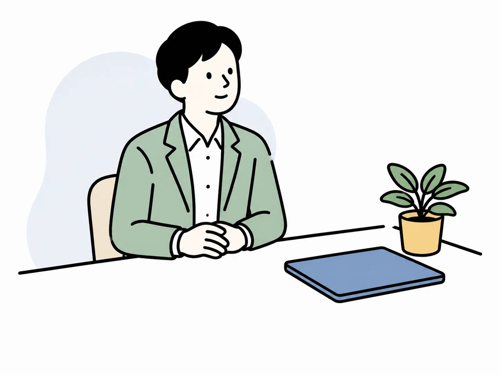
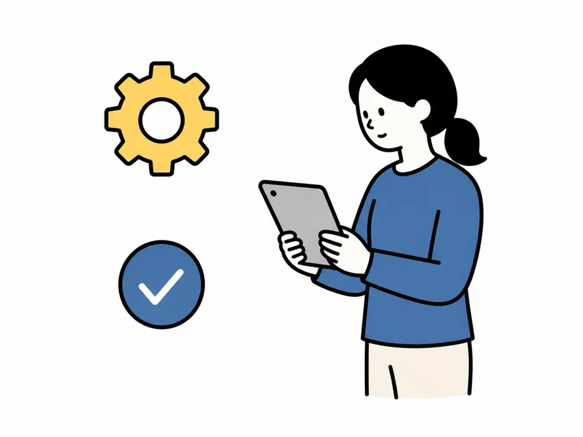
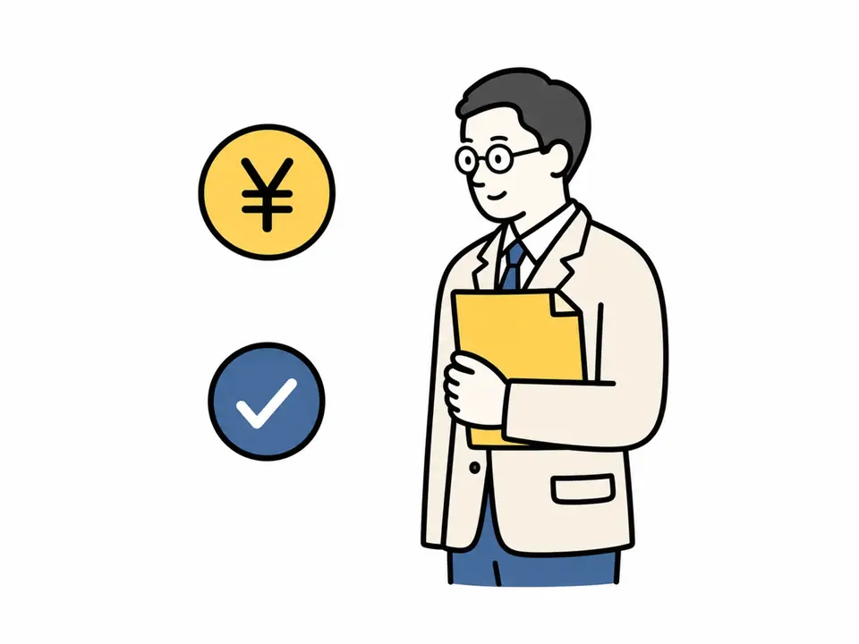
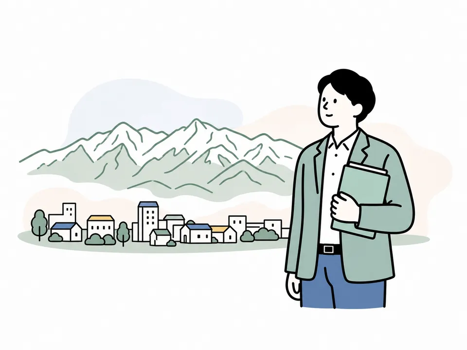

給与締めのたびに、確認が集中する
勤怠の不備、手当の変更、入退社情報を締め日前後にまとめて確認し、計算まで抱えている。
創業3年以内・従業員10名まで
月45,000円（税抜）契約開始から12か月間／13か月目以降は月55,000円（税抜）
初回相談は無料です。この時点で契約は確定しません。
富山県社会保険労務士会所属 代表 社会保険労務士 近藤 昭宏
締め日前の給与計算、入退社や扶養の届出、日々の労務相談。毎月の実務を引き受け、判断に迷うときはその都度ご相談いただけます。

01 / BEFORE
給与の締めが来るたびに確認が集中し、入退社があれば様式と期限を調べ直す。作業そのものより、確かめる時間が積み上がります。
勤怠の不備、手当の変更、入退社情報を締め日前後にまとめて確認し、計算まで抱えている。
入社、退社、扶養、月額変更など、発生時期の異なる手続きが一つずつ割り込んでくる。
雇用条件、労働時間、休職や退職の対応を、問題が起きてから誰に聞くか決める状態になっている。


02 / AFTER
締め日に合わせて勤怠と変更点をお送りいただければ、計算も届出もこちらで進めます。確認が必要な点だけ、こちらからご連絡します。
03 / ONE WINDOW
年金事務所、ハローワーク、労働基準監督署。窓口ごとに様式も期限も違いますが、会社側の連絡先は当事務所ひとつにまとまります。
勤務表、変更情報、雇用や労務に関する相談をお送りください。
給与計算、定例・年次手続き、個別労務相談を進めます。
計算結果、手続きの進捗、不足資料、判断材料を共有します。
04 / SCOPE
安く見せるために範囲をぼかしません。標準の業務範囲と主な別料金を事前に確認できます。
別料金の業務は、必要性を確認したうえで事前にお見積りします。固定料金は料金ページでご確認ください。
05 / PRICE
対象は、契約開始日時点で創業3年以内・従業員10名までの企業さまです。
従業員が11名以上になった場合の料金、31名以上・複数拠点などの個別設計は料金ページに記載しています。
30分の現状確認を申し込む06 / NEXT IMPROVEMENT
月額顧問に無理に組み込まず、会社の現状と予定に合う場合だけ、次の支援としてご提案します。


紙やExcelのままでも顧問は始められます。運用が回らなくなってきた段階で、必要性と費用をあわせてご提案します。
制度の要件、実施時期、必要な証拠書類を確認したうえでご提案します。購入・契約・運用変更の前にご相談ください。
助成金の支給は保証できません。対象年度の要件、実際の運用、証拠書類を確認したうえで受任可否をご案内します。
07 / FIRST 30 MINUTES
依頼内容が決まっていなくても構いません。現在の担当、使用中の勤怠・給与方法、直近の困りごとから確認します。
会社規模と気になる業務だけ入力してください。
現状と優先順位を整理します。
月額に含む業務、別料金、会社側の担当を明示します。
必要資料、連絡方法、最初の締め日を決めます。
初回相談は無料です。
まず、今どこに負担が集まっているかを一緒に整理します。
08 / FAQ
09 / REPRESENTATIVE
お引き受けするのは、近藤昭宏です。
創業期は、営業、採用、資金繰り、現場づくりが同時に進みます。労務の実務と相談先を先に整えておくことで、経営者が一人で調べ続ける状態を減らしたいと考えています。できることと別料金になることを先にお伝えし、会社に合う進め方を一緒に整理します。

現在のやり方と困りごとを確認し、月額に含む範囲、別料金、開始までに必要な準備をお伝えします。
30分の現状確認を申し込む初回相談無料・オンライン可。平日9:00–18:00